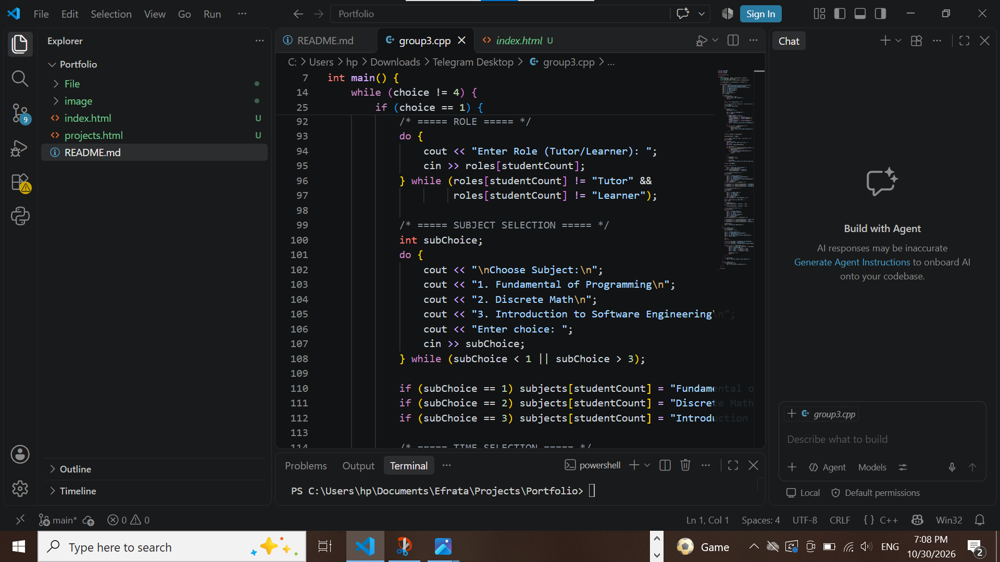

Integrated MySQL database queries with C++ to display inventory details, track medicine quantities, and handle order logic.
Project Demo Video
How I built it
Designed the pharmacy management system using C++.
Connected the C++ program to a MySQL database.
Created features to display and manage medicine inventory.
Added logic to track medicine quantities and handle orders.
2. Tutor-Learner Matching System

Developed interactive menu logic allowing students to choose roles, select courses like Programming Fundamentals or Discrete Math, and find study support.
How I built it
Designed an interactive menu using C++.
Created options for students to choose their roles.
Added course selection, including Programming Fundamentals and Discrete Math.
Implemented matching logic to help students find study support.
YouTube Talk
Watch this educational video about web development: